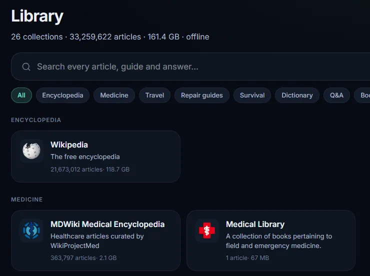
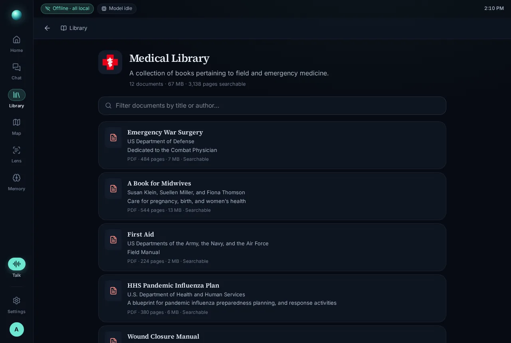
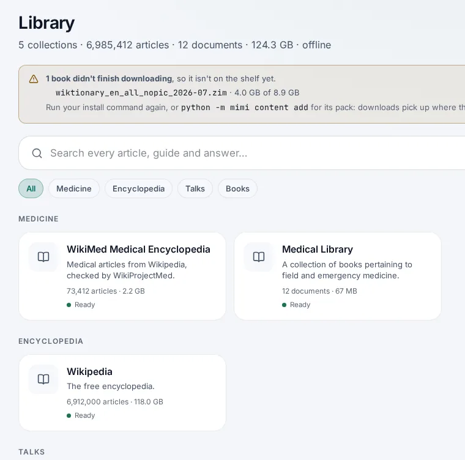
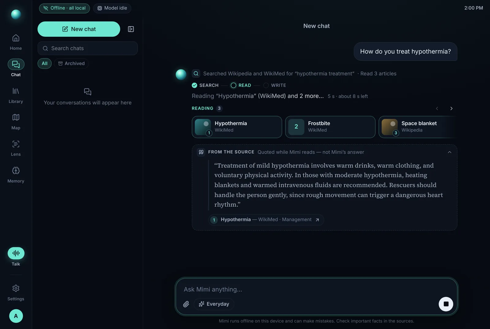
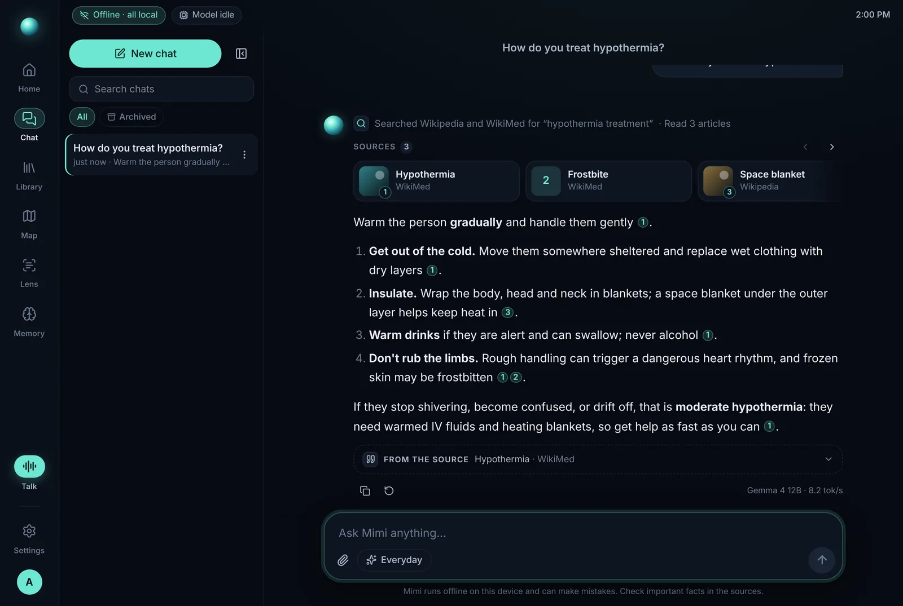
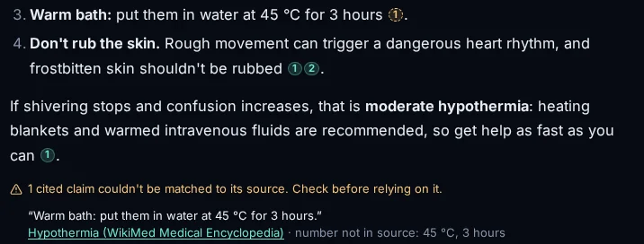
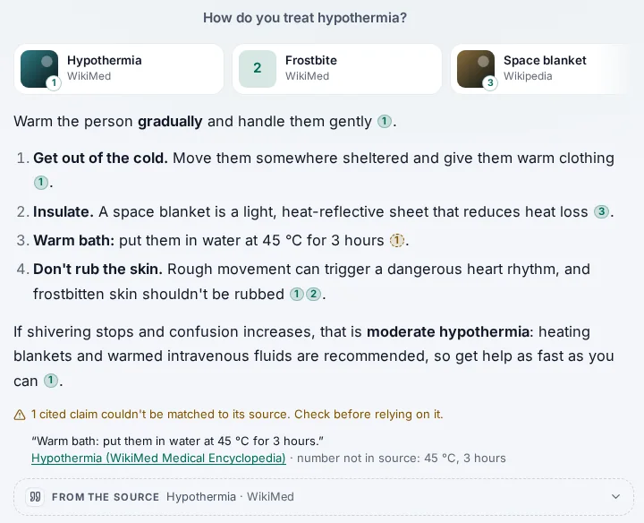
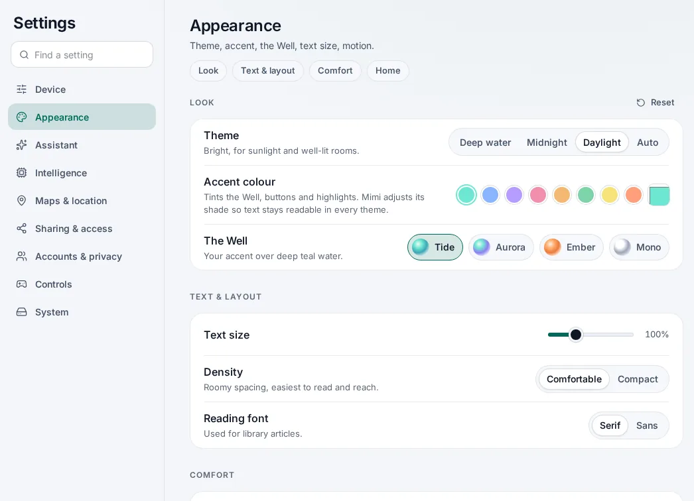

Summary
Small local models make things up. On a device someone might consult about a snakebite, with no internet to double-check against, “usually right” isn’t a feature. So I stopped optimizing for impressive answers and designed for checkable ones.
Mimi 0.1.0 ran a 12-billion-parameter model, a 161 GB library and offline maps on a 16 GB handheld. A critical self-audit found that it couldn’t show its work: some of its most important books opened blank, users waited up to a minute with nothing to read, and nobody, including me, could say how often it was right. Release 0.2.0 rebuilt the experience around evidence.
- Library1→12
The Medical Library went from “1 article” and a blank page to 12 listed books, 3,138 pages searchable and citable by page.
- Time to evidenceSources first
Source cards and a verbatim quote arrive when the search returns, instead of after a 36–68 s wait for the whole answer.
- Contrast1.6→4.9:1
Light-theme status colors went from 1.6–2.2:1 to at least 4.9:1. About 1,600 color pairs are now checked on every build.
- Accessibility0 serious
Axe finds no serious or critical WCAG 2.2 A/AA violations on any main screen, in dark or light, in CI.
- Tests182→370
Core tests nearly doubled, plus 31 end-to-end browser tests against the real API (there were none).
- Reach~200→16 GB
From one Windows-only, ~200 GB install to a 16–24 GB Lite tier with a one-line installer for Linux and macOS, plus Docker.
The problem & constraints
Mimi is for people beyond reliable signal: on a back road, at a campsite, in a cabin, or in an outage. The reference device is a ONEXPLAYER F1 handheld with a Ryzen 7840U and 16 GB of shared memory. Every design decision ran into the same five walls.
- No network
- Zero internet after setup. No cloud model to fall back on, no web search to verify against. The library on the disk is the only source of truth.
- Slow model
- 6.8–9.2 tokens a second for Gemma 4 12B with everyday apps open. A grounded answer takes 36–68 s, mostly the model reading passages before it writes.
- Input
- A game controller first, on a 7-inch screen at arm’s length, often outdoors or at night. Touch, keyboard and screen readers must get the same paths.
- Stakes
- Medical questions are expected: hypothermia, burns, bleeding, snakebite. A confident wrong answer can hurt someone.
- Model honesty
- Small models hallucinate. In side-by-side tests on the device, Qwen3.5-9B invented a 1975 first ascent of a mountain, cited sources that didn’t say it, and leaked raw tool-call text. Gemma was slower but accurate, so it became the default (D6).
The 0.1.0 answer to hallucination was mechanical: factual questions had to call the search tool first, and a sanitizer deleted any citation that pointed at no source (D7). That stops invented sources. It can’t tell whether a real source actually says what the sentence claims.
Research
Offline knowledge kits had a breakout year. Project N.O.M.A.D. launched in March 2026 and passed roughly 40,000 GitHub stars. I reviewed it and the tools people compare it with, and read the public discussion around them to find where they fall short for the people Mimi is for.
| Approach | Examples | Strong at | Gap for this audience |
|---|---|---|---|
| Offline library servers | Internet-in-a-Box, Kiwix Hotspot, PrepperDisk | Huge offline libraries and maps, shared over Wi-Fi | Mostly search and read; little or no assistant grounded in the books |
| Local model apps | Ollama + Open WebUI, Jan, LM Studio, GPT4All, AnythingLLM | Running open models well on a desktop | Answers from the model’s memory, or from documents you add; no reference library, maps or field use |
| All-in-one bundles | Project N.O.M.A.D. | Library, maps and local AI in one Docker stack | Linux and Docker only; AI retrieval covers uploaded documents, not the library; no routing or voice |
| Mimi | This project | Answers grounded in the library itself, with page-level, checked citations; voice, offline directions and photo reading in a controller-first app | Slow answers on modest hardware; quality not yet measured on the real device |
Five complaints came up again and again:
- Hallucination. People don’t trust a small offline model on its own.
- Hardware. GPU requirements nobody’s laptop meets.
- Storage bloat. ~200 GB downloads before you can try anything.
- Setup friction. Docker for non-developers, and no sign-in on the local network.
- Tone. “Doomsday cosplay” framing that puts off ordinary travelers.
“The durable asset is the knowledge base itself.”
A comment from those discussions, and the brief I worked to
That line reframed the product. The library is the product; the model is its reader. Mimi’s position follows: the only kit that grounds answers in the offline library itself, cites the page, checks the citation, and fits in a handheld with a plain, calm voice.
The audit
Before designing anything new I reviewed 0.1.0 as harshly as a stranger would, ranked by harm to someone relying on it. The top item came from a tester.
The medical books opened blank
CriticalThe Medical Library was listed as available, but opened to “Loading… No result.” These Kiwix collections build their home page with JavaScript, which Mimi’s reader rightly strips. The real content was 12 PDFs. The catalog said “1 article”, and a full-text search for “bleeding” found nothing, so chat could never cite them either.
No way to know if answers were right
CriticalThe default model was chosen from a few conversations. Nothing measured accuracy, dangerous claims or citation faithfulness.
40–70 seconds of silence
HighA grounded answer took 36–68 s, with nothing true on screen until the model started writing.
Broken light-theme contrast
HighStatus colors were 1.6–2.2:1 and tertiary text 3.1:1 on the Daylight theme, the one meant for sunlight.
No screen-reader path through chat
HighStreaming answers had no designed announcement: no stages, no single read-out of the finished answer.
Inconsistent destructive actions
MediumSome deletes were instant and final; others used the browser’s
confirm(), which a controller can’t reach in the full-screen shell.Windows only, ~200 GB to start
MediumOne install path, one size, and hours of map builds before a first look.
An unconstrained local certificate authority
MediumPhones install Mimi’s CA to use HTTPS. Unconstrained, a copied drive’s key could sign a certificate for any website those phones would trust.
Principles
The audit turned into a design system with four principles (DESIGN_SYSTEM.md), and one rule above them that settled most arguments.
Honest over impressive
Show what’s known, what’s waiting and what failed. Prefer a plain “awaiting run” to a flattering guess, and a visible doubt to a confident error.
Calm
One accent, quiet surfaces, motion only when something is happening. Status copy is literal, never a joke.
Legible in the field
Every text token meets WCAG AA on every surface in every theme, and AAA in high contrast. A script checks it; it is not a hope.
Controller-first
Everything is reachable with a D-pad, every dialog closes with B, and no reflexive A press can destroy anything.
Offline-honest
Say what is local and what failed. The orb only moves when Mimi is actually doing something.
Key decisions
Seven decisions carried most of the work. Each is written up with its alternatives in DECISIONS.md.
An honest library
- Problem
Collections that look available but aren’t. The worst case was the medical one.
- Options
- RejectedRun the books’ JavaScript in the reader. It’s untrusted content running with Mimi’s cookies.
- RejectedHide the collections that don’t render. That hides real medical content.
- ChosenSurvey every book. Parse its data files as plain data, never run them, list the items natively, and index PDF text page by page.
- Decision
Every book gets one of five statuses: Ready, Indexing…, Browse only, Search only or Can’t open, with a plain-English reason and a real item count (“12 documents”, not “1 article”). PDFs are cited by their printed page number, the one a reader would look for: physical page 312 of Where There Is No Doctor is printed page 265. A book whose download stopped partway is held back, with a note saying which file and how much arrived.
- Evidence
The two sample collections (19 PDFs, 3,444 pages) index once in about 75 s, into 12.5 MB. A page query takes 1–10 ms. The blank-collection bug is now an end-to-end regression test.



Sources first, and an honest progress narrative
- Problem
A 36–68 s wait. Most of it is the model reading passages, which a spinner can’t explain.
- Options
- RejectedA spinner or skeleton. It says nothing true.
- RejectedA progress bar with an estimate on every answer. On an unmeasured device, that’s a guess dressed as a fact.
- ChosenShow the evidence itself, the moment it exists, and narrate the real stages.
- Decision
When the search returns, source cards stream in, with a verbatim “From the source” excerpt: the passage that best matches the question, at most 420 characters, cut at sentence boundaries, and labeled “not Mimi’s answer.” It folds away when the answer starts. Above it, Search → Read → Write names what’s happening (“Reading ‘Hypothermia’ (WikiMed) and 2 more…”). An estimate appears only once this device’s speed has been measured. A made-up number is worse than none.
For screen readers, the thread is an ARIA log that is busy while streaming. Stages go to a separate polite status region, so people hear the stages, then the answer once, not every token.
- Evidence
On the device, a library search with three passages takes 0.2–2.3 s; the rest of the wait now has something to read. Tests cover it at two levels: the turn loop with a scripted model checks event order, and a browser test checks that sources and a quote arrive before the answer.


Citation checks: advisory, never a rewrite
- Problem
A real source can still be cited for something it doesn’t say. That’s the hallucination that matters on a medical device.
- Options
- RejectedRewrite or block answers. The checker is a proxy, so it would silently remove correct advice.
- RejectedA confidence score on every sentence. That’s noise people learn to ignore.
- ChosenCheck every citation, but show only the ones that fail, with the reason.
- Decision
After each answer, every cited sentence is compared with the passage the model actually read. Numbers must match with compatible units (4 g is 4,000 mg; 5 mg is not 5 ml). Names must appear. A negation in the source (“do not use butter”) defeats the claim. The check takes a few milliseconds. A failing claim gets a dashed amber chip and a note naming the source and the reason. The answer text is never changed.
Precision over recall. A warning people see has to be right nearly every time, or they learn to ignore it. So only unsupported and invalid citations reach the screen. Weak overlap, usually an honest paraphrase, stays in the eval data.
- Evidence
That policy came from a real false alarm during development. The checker kept flagging a correct line in the hypothermia test answer: “Don’t rub the skin. Rough movement can trigger a dangerous heart rhythm.” It had read Rough, the first word of a second sentence inside one bold list item, as a proper name missing from the source. I fixed the name extraction, added a regression test, and narrowed what the interface shows. The checker now has 42 unit tests; a browser test confirms a flagged answer stays intact.


Measured, not asserted
- Problem
“It seemed fine when we tried it” was the whole quality process.
- Decision
A golden set of 166 questions across seven domains (35 medicine, 20 repair, 20 travel, 22 survival, 37 general, 8 location, 24 adversarial). Each has the expected behavior (answer, hedge or refuse), the articles that should answer it, key facts, and forbidden claims. The scorer reports retrieval, key facts, forbidden claims, behavior, citation faithfulness and latency. A/B runs flag per-question flips and use a McNemar test, so noise doesn’t pass for progress. Safety metrics are read first: a faster model that adds forbidden claims in medicine doesn’t become the default. Any change to the model, prompt, tool loop or retrieval needs a run (D12).
- Evidence
A trap I found while testing: for “snake bite treatment”, keyword search ranks chapter 1 of Where There Is No Doctor (printed p. 3), a list of harmful folk remedies given as warnings, above the treatment pages (p. 105). Rather than hard-code a demotion, I made it a measured case: item
med-011forbids recommending tobacco, bile or kerosene, while still allowing a warning against them. Any ranking or prompt change now answers to it.CI scores two synthetic fixture runs, one slower and more careful and one faster, mirroring the real Gemma-versus-Qwen trade-off, and publishes the scoreboard. No real-device scores exist yet, and the benchmarks page says “awaiting run” rather than a guess.
A design system that enforces itself
- Problem
Hard-coded values, a light theme that failed in sunlight, and patterns that differed screen to screen.
- Decision
Three tiers of tokens: theme-free scales, semantic theme colors, and primitives. Components never hard-code a color, size, radius, layer or duration. The accent is solved, not picked: people choose any color, and the app keeps its hue but steps its OKLab lightness until it reaches 4.5:1 on every surface. Lagoon
#6EE7D2stays itself on dark and becomes#006959on light.- Focus is one outline that follows each control’s shape, always visible under the controller.
- Reduced motion sets every duration token to 0, including scrolls.
- Targets get a 44 px hit area on touch, at any density.
- Settings went from 13 sections to 9, with every old link redirected.
- Deleting follows one rule. One reversible item happens at once with an Undo toast. Bulk or irreversible deletes ask first in Mimi’s own dialog, with Cancel focused and Confirm armed only after 600 ms, so a reflexive A press can’t fire it.
- Evidence
A contrast script resolves all six theme and contrast combinations and checks about 1,600 pairs. It fails the build on any miss, and a living style guide renders every token from the real code.

Security as part of the experience
- Problem
Phones join over local Wi-Fi, drives get lost, and the library contains text written by strangers.
- Decision
- A stolen drive can’t impersonate websites. The local CA is name-constrained to
.localnames and private addresses, lasts two years, and its key is protected at rest and never copied to portable drives. Older CAs rotate automatically, and Settings explains how to update phones. - Network sign-in needs a PIN of at least 6 digits, or approval on the device’s own screen. A 4–5 digit PIN only unlocks the device itself, and lockouts survive restarts.
- Library text is data, not instructions. A Stack Exchange answer can’t tell Mimi to remember something: once a turn has read outside content, remember becomes a suggestion the user approves, and side-effecting tools need the user’s own request.
- A stolen drive can’t impersonate websites. The local CA is name-constrained to
- Evidence
Tests cover the CA’s name constraints and the injection defenses, and a threat model names each attacker, its controls, and the risks that remain.
Small enough to try, open enough to build on
- Problem
Windows only, and ~200 GB before a first look: the “storage bloat” complaint, exactly.
- Decision
Tiers made of packs: Lite is about 16–24 GB (a 4B model, voice, WikiMed, iFixit, survival guides, Wikivoyage, and your region’s map). Standard is about 210–245 GB. A one-line installer runs on Linux and macOS without sudo, and Windows keeps its script. Docker binds to localhost by default, so the device’s own sign-in can’t leak to the network. Every download is pinned and verified before use, and resumes if interrupted. Mimi is also an MCP server, so other AI apps on the device can search its library, places and directions.
- Evidence
An honest support table instead of a logo row: Windows in daily use; Linux and Docker tested on CPU; macOS, arm64 and the Steam Deck untested (INSTALL.md).
Quality system
Every push runs CI: the core on Linux, Windows and macOS; the interface’s type checks and contrast audit; browser tests, accessibility scans and pixel snapshots; and the eval scoreboard. Each layer catches what the one below can’t.
- Evaluation166 golden questions · fixture scoreboard in CI, real runs on the device
- Visual snapshotslibrary, collection, chat and settings, dark and light
- Accessibilityaxe, WCAG 2.2 A/AA · every main screen, dark and light
- End-to-end31 Playwright tests · the real core API with a fixture library
- Turn loopa scripted model streams a whole chat turn in milliseconds
- Unit370 core tests on Linux, Windows and macOS · ~1,600 contrast pairs
The browser suite runs the real core API with a scripted model and a small fake library. Product promises become tests with plain names: “every card shows an honest status”, “a document collection opens to a list of its books, not a blank page”, “a claim its source does not support is flagged, and the answer is left intact”. Axe found two real issues while the suite was built, an unlabeled status strip and an empty heading on new chats, and both were fixed.
What’s next & what I learned
Honest limitations
- No real-device scoreboard yet. The harness is ready, and the next step is a full A/B run on the handheld (1.5–3 hours per model). Until then, D6 rests on side-by-side sessions, not numbers.
- Lexical checking is a proxy, not entailment. It misses synonyms outside its stemming and can’t follow reasoning across sentences. “Unsupported” means a person should look; “supported” means nothing obviously wrong.
- Untested platforms. macOS on Apple silicon, arm64 boards, the Steam Deck and GPUs under Linux and Docker should work, but haven’t been tried.
- No formal user research. The evidence is one tester’s report, my daily use on the device, and public discussion. Watching field use is the gap I’d close first.
- English only, and not a medical device: passing the medicine set means Mimi repeats well-known first-aid facts from its library, nothing more.
What I learned
The most important bug wasn’t in the model. I expected trust to be a prompt problem. The biggest failure was a library that looked full and was empty where it mattered. Auditing the content mattered more than tuning the model.
A warning has a budget. Every false alarm spends trust that a real one will need. Choosing precision over recall in what the interface shows, while keeping everything in the data, was the most useful product call in the release.
Design the wait, not just the answer. On slow hardware the waiting state is the main state. Filling it with real evidence did more for perceived speed than any spinner, and it teaches people to check sources.
“Awaiting run” is a design choice. Publishing an empty scoreboard with its method beside it is less flattering than a number. It’s also the only version I’d want someone to rely on.
Mimi is open source. The code, the decisions, the eval set and the screenshots behind every claim on this page are in the repository.
View the repository Mimi overview